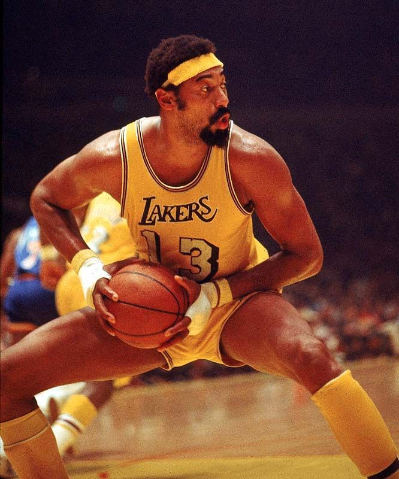

Leyendas Inolvidables
info
Este sitio esta creado para que se conozcan y se recuerden a algunas de las más grandes leyendas del baloncesto de toda la historia.
Mejores 3 jugadores de toda la historia
| Nombre: | Promedio de puntos por partido |
|---|---|
| 1. Michael Jordan | 35 puntos por partido |
| 2. Lebron James | 27.22 puntos por partido |
| 3. Kobe Bryant | 25 puntos por partido |
Jugadores de 1900
Michael Jordan

Michael Jeffrey Jordan es un exjugador de baloncesto estadounidense. Con 1,98 metros de altura, jugaba en la posición de escolta. Es considerado por la mayoría de aficionados y especialistas como el mejor jugador de baloncesto de todos los tiempos.
Bill Russell

Felton «Bill» Russell fue un baloncestista estadounidense que disputó trece temporadas en los Boston Celtics de la NBA. Con 2,08 metros de altura, jugaba en la posición de pívot.
Kareem Abdul-Jabbar

Abdul-Jabbar, en idioma árabe كريم عبدالجبار, nacido con el nombre de Ferdinand Lewis Alcindor Jr., es un exbaloncestista estadounidense que militó en Milwaukee Bucks y Los Angeles Lakers de la NBA durante 20 temporadas, desde 1969-70 a 1988-89.
"Magic" Johnson
Earvin "Magic" Johnson, Jr. es un exbaloncestista estadounidense, considerado uno de los mejores de la historia. Militó en Los Angeles Lakers de la NBA desde 1979 hasta 1991, tiempo en que publicó que había contraído el VIH, abandonando el deporte profesional para combatirlo, salvo por un breve período en 1996.
Wilt Chamberlain
Norman «Wilt» Chamberlain fue un baloncestista estadounidense que disputó 14 temporadas en la NBA. Con 2,16 metros de altura, jugaba en la posición de pívot. Durante sus años en activo, militó en Philadelphia/San Francisco Warriors, Philadelphia 76ers y Los Angeles Lakers.
Larry Bird
Larry Joe Bird es un exjugador de baloncesto estadounidense que disputó 13 temporadas en la NBA, todas ellas con los Boston Celtics, con los que consiguió tres campeonatos: 1981, 1984 y 1986.
Tim Duncan
Timothy Theodore Duncan, más conocido como Tim Duncan, es un exjugador de baloncesto estadounidense que jugó como ala-pívot o pívot en los San Antonio Spurs de la NBA desde la temporada 1997-98 hasta la 2015-16.
Jugadores de la actualidad
Lebron James
LeBron Raymone James Sr. es un jugador de baloncesto estadounidense que pertenece a la plantilla de Los Angeles Lakers de la NBA. Con 2,06 metros de estatura, su posición es la de alero, pero su talento, versatilidad y poderío físico le permiten jugar tanto de base como de ala-pívot.
Stephen Curry
Wardell Stephen Curry II, más conocido como Stephen Curry, es un jugador estadounidense de baloncesto que pertenece a la plantilla de los Golden State Warriors de la NBA. Con 1,88 metros de altura, juega en la posición de base. Actualmente es el jugador con el record de más triples de la historia.
Giannis Antetokounmpo
Giannis Ougko Antetokounmpo es un baloncestista griego-nigeriano que pertenece a la plantilla de los Milwaukee Bucks de la NBA. Con 2,13 metros de altura, juega en la posición de ala-pívot, pero debido a su gran versatilidad es capaz de jugar tanto de alero como de pívot.
Records mundiales
Más puntos en un partido
100 por Wilt Chamberlain, Philadelphia Warriors (contra New York Knicks) el 2 de marzo de 1962.
Más triples anotados en un partido
14 por Klay Thompson, Golden State Warriors (contra Chicago Bulls) el 29 de octubre de 2018 (14 de 24 intentos)
Más triples fallados en un partido
16 por Damon Stoudamire, Portland Trail Blazers (contra Golden State Warriors) el 15 de abril de 2005 (5/21)
16 por James Harden, Houston Rockets (contra Orlando Magic) el 13 de enero de 2019 (1/17)